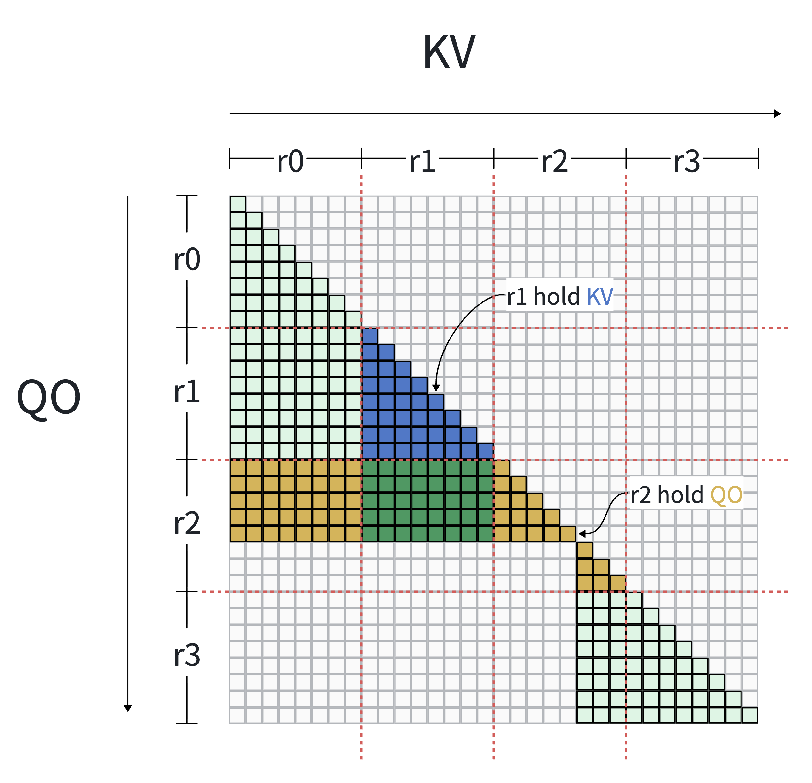
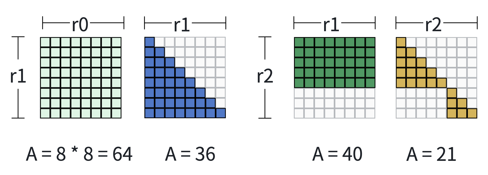
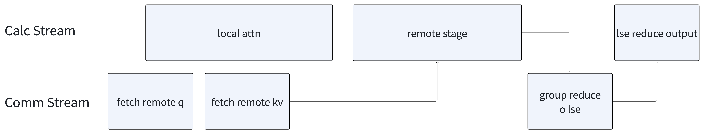

Dynamic Attention Solver#
Introduction#
Context Parallelism (CP) shards sequence activations across distributed devices to overcome memory constraints in long-context training. In MagiAttention, the static attn solver has largely solved CP scheduling for standard long-context workloads where masks are static or deterministic prior to the iteration (e.g. causal, causal document, sliding window). By leveraging initial token dispatch before the iteration starts, the static solver ensures compute balance across ranks while restricting data movement to \(\mathrm{KV}\)-communication only, keeping Query/Output (\(\mathrm{QO}\)) tokens fixed on their host devices.
Limitations of the Static Solver#
To achieve computation load balancing across distributed ranks, the static solver relies on pre-iteration token dispatch: it splits the sequence into chunks, estimates the FLOP workload for each chunk, and heuristically dispatches these chunks to CP ranks prior to execution.
Crucially, this approach requires the global attention mask to be static and fully deterministic before the iteration begins, so that each chunk’s attention FLOP workload can be evaluated in advance to drive the heuristic dispatch algorithm.
However, the static solver faces two fundamental limitations that prevent it from supporting dynamic sparse attention mechanisms:
Runtime Dynamic Sparse Attention: Architectures such as DeepSeek Sparse Attention (DSA) [DeepSeek-AI et al., 2025] and Native Sparse Attention (NSA) [Yuan et al., 2025] compute sparse \(\mathrm{KV}\) selections at runtime via lightweight indexers during each layer’s forward pass. Because the resulting attention masks depend directly on dynamic activation states and learned parameters, mask structure cannot be known prior to iteration execution, making pre-iteration token dispatch completely infeasible.
CPU-Only Mask Representation: The static solver only accepts CPU-side mask descriptors (e.g., mask type enums, document boundary indices). It cannot directly consume attention masks represented as GPU-resident tensors. Many modern attention variants naturally produce or manipulate masks as on-device tensors, making them incompatible with the static solver’s CPU-only mask interface.
These limitations leave the static solver incapable of supporting modern dynamic and device-native attention mechanisms.
Core Problem & Design Approach#
The core systems challenge in dynamic Context Parallelism is: under strict activation memory balance constraints (where each rank maintains a uniform sequence shard), how to perform online workload partitioning and compute-communication co-scheduling when token dispatching/reordering is unavailable and attention masks are resolved dynamically at runtime?
To address this, MagiAttention introduces the Dynamic Attention Solver. The core idea rests on two key design choices:
Fixed Token Sharding with \(\mathrm{QO}\)-Comm Enabled: Without pre-iteration token dispatch, each rank holds a fixed sequence shard. In this setup, communicating KV only strictly fixes each rank’s computation workload. This leaves no room for load rebalancing. Therefore, the solver enables communication for both \(\mathrm{QO}\) and \(\mathrm{KV}\) (\(\mathrm{QO}\)-comm enabled). Communicating both \(\mathrm{QO}\) and \(\mathrm{KV}\) allows any computation workload to be scheduled onto any rank.
Per-Layer Online Solving: During each attention layer’s forward pass, the dynamic solver perceives the current layer’s mask structure, calculates the FLOP workload for each attention tile, and dynamically assigns computation tasks to CP ranks. It balances compute FLOPs across devices while minimizing the maximum communication volume among all ranks (i.e., bottleneck minimization), generating execution metadata (
CalcMetaandCommMeta) in real time.
┌─────────────────────────────────────────────────────────┐
│ Context Parallelism Design │
└────────────────────────────┬────────────────────────────┘
│
┌────────────────────────┴────────────────────────┐
▼ ▼
MagiAttention Static Solver MagiAttention Dynamic Solver
┌───────────────────────────────────┐ ┌────────────────────────────────────┐
│ • Mask: Static / Pre-iter known │ │ • Mask: Dynamic / Per-layer runtime│
│ • Token Sharding: Heuristic │ │ • Token Sharding: Fixed sequential │
│ reordering (Pre-iteration) │ │ sharding │
│ • Comm Space: KV-only comm │ │ • Comm Space: QO & KV dual comm │
│ • Schedule: Local QO, pull KV │ │ • Schedule: Dynamic tile-to-rank │
└───────────────────────────────────┘ └────────────────────────────────────┘
In the following sections, we describe the detailed formulation and scheduling algorithms of the dynamic attn solver (Overview), present its user interface (User Interface), and outline current limitations and future roadmap (Current Limitations & Future Roadmap).
System Abstraction & Cost Modeling#
The Dynamic Attention Solver formulates Context Parallelism (CP) scheduling as a mask-aware online task-to-rank mapping problem without token reordering. By maintaining sequence tokens in their original, contiguous physical layout \((0..P-1)\), it preserves strict activation memory balance. For each distinct dynamic mask, the solver inspects its structure to perceive true FLOP workloads across \(\mathrm{Q} \times \mathrm{KV} \times \text{Head}\) dimensions. Its core objective is to strictly equalize non-zero compute FLOPs across ranks while minimizing bottleneck \(\mathrm{QO}\)/\(\mathrm{KV}\) communication volume.
Fixed Sequential Sharding#
Without pre-iteration token dispatch, the dynamic solver adopts fixed sequential sharding as its default data layout. A sequence of length \(S\) is evenly partitioned into \(P\) contiguous chunks \((0..P-1)\), where rank \(p\) stores the \(p\)-th chunk. This ensures every rank holds exactly \(S/P\) tokens, guaranteeing perfectly balanced activation memory across all CP ranks by construction.
Without prior knowledge of the attention mask, sequential sharding serves as an effective mask-agnostic layout that preserves token locality. By storing adjacent tokens on the same rank, it aligns with common attention patterns where neighboring tokens frequently attend to each other. Maintaining this locality increases the proportion of local computation and reduces cross-rank data transfers, making sequential sharding friendly to the dynamic solver.
Furthermore, this sharding induces a natural grid structure over the global attention space. With \(P\) query chunks and \(P\) key-value chunks, the full \(\mathrm{Q} \times \mathrm{KV}\) attention matrix is partitioned into a \(P \times P\) grid. Block \((i, j)\) represents the attention between query chunk \(i\) and key-value chunk \(j\). Blocks on the principal diagonal \((i, i)\) are local to rank \(i\), whereas off-diagonal blocks require communication to compute.
{kind=link}

Fig. 71 Illustration of fixed sequential sharding with \(P = 4\) ranks on a variable-length (varlen) causal mask containing two sequence samples of lengths 21 and 11. The vertical axis represents Query/Output (\(\mathrm{QO}\)) and the horizontal axis represents Key/Value (\(\mathrm{KV}\)), both ordered by token ID. Colored entries indicate valid non-masked positions requiring computation. Blue tiles represent \(\mathrm{KV}\) stored on rank r1, yellow tiles represent \(\mathrm{QO}\) stored on rank r2, and green tiles represent the cross-rank attention block where \(\mathrm{QO}\) resides on r2 while \(\mathrm{KV}\) resides on r1. Because \(\mathrm{QO}\) and \(\mathrm{KV}\) belong to different ranks, the green block cannot be computed locally and strictly requires inter-rank communication.#
Computation Cost Estimation#
The computational workload of attention is directly estimated by the sum of effective mask areas. Since attention FLOPs scale linearly with the number of valid (non-masked) entries, the global attention space (\(\mathrm{Q} \times \mathrm{KV} \times \text{Head}\)) is partitioned into basic computation blocks \(B_{i,j,h}\), where each block represents the sub-matrix computation between query chunk \(i\), key-value chunk \(j\), and attention head \(h\).
The workload of each block \(B_{i,j,h}\) is quantified by its effective mask area \(A(B_{i,j,h})\) — defined as the total count of valid (non-masked) entries within that sub-matrix. In practice (e.g., with packed variable-length sequences, multi-document boundaries, or dynamic sparse masks), a single block may not possess a uniform structure; instead, it can contain a combination of multiple sub-regions, arbitrary shapes, or scattered valid entries. Regardless of the internal layout, \(A(B_{i,j,h})\) is determined by directly counting the valid non-zero entries in the corresponding mask sub-matrix.
For instance, typical patterns within a block include:
Full Mask: Every entry is valid, yielding \(A = S_q \times S_k\) (where \(S_q\) and \(S_k\) are the query and key-value chunk sizes).
Causal Mask: Entries are restricted by causality, yielding \(A = \frac{S_q \times (S_q + 1)}{2}\) for diagonal blocks (assuming \(S_q = S_k\)).
Mixed or irregular composition: The block intersects multiple sequence boundaries or dynamic sparse selections, forming a combination of multiple shapes or sparse patterns.
{kind=link}

Fig. 72 Illustration of computation workload estimation based on effective mask area across different block composition cases.#
Communication Cost Estimation#
When a rank is assigned to compute an attention block whose required data does not fully reside locally, inter-rank communication is triggered to transfer the missing data chunks. The communication cost of a data chunk is estimated by its volume, defined as the number of tokens in the chunk multiplied by the number of attention heads:
Taking the forward pass as an example: computing an attention block requires \(\mathrm{Q}\), \(\mathrm{K}\), \(\mathrm{V}\) as inputs and produces \(\mathrm{O}\) and \(\text{lse}\) (log-sum-exp) as outputs. Since the size of \(\text{lse}\) is negligible compared to activation tensors, it is omitted from cost estimation. Therefore, a \(\mathrm{QO}\) chunk communication transfers \(\mathrm{Q}\) to the computing rank and \(\mathrm{O}\) back, while a \(\mathrm{KV}\) chunk communication transfers \(\mathrm{K}\) and \(\mathrm{V}\) together.
Each communication event involves a sender and a receiver: when a data chunk is transferred from rank \(s\) to rank \(d\), the transfer simultaneously increases rank \(s\)’s send volume and rank \(d\)’s receive volume. The solver tracks per-rank send and receive volumes separately, as both directions contribute to the overall communication bottleneck. Its secondary objective is to minimize the maximum communication volume across all ranks (bottleneck minimization), preventing any single rank from becoming a communication straggler.

Fig. 73 Illustration of communication cost estimation. Under \(P = 4\) sequential sharding, the red attention tile (bottom right) is scheduled on rank 3 (r3). While r3 exhibits high data locality for this task, a partial dependency triggers a remote fetch from r2. This cross-rank transfer costs \(S_{\text{chunk}} \times H\), incrementing r2’s and r3’s communication volumes. Remote fetch overhead is amortized via data reuse when multiple local tiles share the same chunk.#
Optimization Model#
The online solver searches for an optimal block-to-rank mapping \(\mathcal{M}: \{B_{i,j,h}\} \to \{0, \dots, P-1\}\) that optimizes communication and computation overlap under strict memory and dependency constraints:
Compute Load Balance Constraint: Rather than a strict minimization, compute balance is formulated as an inequality constraint using an imbalance ratio \(\mu\). For each rank \(r\), its assigned workload must be strictly less than \(\mu\) times the total global workload:
Bottleneck Communication Minimization: Minimize the maximum unidirectional communication volume (either send or receive) across all ranks, preventing network stragglers:
Local Priority & Overlap Maximization: Prioritize assigning local tasks to their host ranks. This allows the system to immediately begin local computation, effectively overlapping it with the communication required for remote tasks.
Dynamic Solver Algorithm#
Given the optimization model defined above, the dynamic solver employs a binary-search-driven greedy heuristic to find a near-optimal block-to-rank mapping in real time. The algorithm is designed for parallelizable execution on multi-core CPUs with millisecond-level latency.
Algorithm Pipeline#
The solver runs three stages inside a binary search loop over the communication threshold \(K\):
┌─────────────────────────────────────────────────────────────────────────┐
│ Binary Search over Threshold K │
│ │
│ for each candidate K in [0, K_max]: │
│ ┌─────────────────────────────────────────────────────────────────┐ │
│ │ Stage 1: Candidate Edge Scoring & Greedy Selection │ │
│ │ • Score each candidate comm edge by benefit/cost ratio │ │
│ │ • Greedily select edges under per-rank budget K │ │
│ ├─────────────────────────────────────────────────────────────────┤ │
│ │ Stage 2: Greedy Task Assignment │ │
│ │ • Build per-task executable rank set from selected edges │ │
│ │ • Assign tasks sorted by (degree↑, area↓) │ │
│ │ • Local-first → USP-heuristic → min-load fallback │ │
│ ├─────────────────────────────────────────────────────────────────┤ │
│ │ Stage 3: Local Refinement │ │
│ │ • Iteratively migrate tasks from overloaded ranks │ │
│ │ • Check feasibility: max_load ≤ μ × avg_load │ │
│ └─────────────────────────────────────────────────────────────────┘ │
│ │
│ if feasible: shrink K_max (tighter comm budget) │
│ else: raise K_min (relax comm budget) │
│ stop when: K_max - K_min < ε × K_max │
└─────────────────────────────────────────────────────────────────────────┘
Stage 1: Candidate Edge Scoring & Greedy Selection. Each candidate communication edge represents transferring a \(\mathrm{QO}\) or \(\mathrm{KV}\) chunk from its host rank to a computing rank. The solver scores each edge by a benefit-to-cost ratio:
where \(W(e)\) estimates the compute workload that edge \(e\) would unlock for the target rank (combining already-assigned tasks, a fraction of unassigned tasks, and a smoothing term), and \(C(e) = S_{\text{chunk}} \times H\) is the communication cost. Edges are sorted by score in descending order and greedily accepted as long as neither the sender’s nor receiver’s accumulated cost exceeds threshold \(K\).
Stage 2: Greedy Task Assignment. After edge selection determines data accessibility, the solver constructs a bitmask of executable ranks for each grid task \(B_{i,j}\) by intersecting the \(\mathrm{QO}\)-reachable ranks for chunk \(i\) and \(\mathrm{KV}\)-reachable ranks for chunk \(j\). Tasks are sorted by ascending degree (number of candidate ranks) and descending area, then assigned with the following priority:
Local priority: if both \(\mathrm{QO}\) and \(\mathrm{KV}\) reside on the same rank, assign locally (zero communication cost).
USP heuristic: prefer the rank suggested by head-group affinity mapping.
Min-load fallback: choose the candidate rank with the smallest current load.
Stage 3: Local Refinement. After initial assignment, the solver performs a bounded number of refinement passes. For each task currently on an overloaded rank (load exceeding \(\mu \times \bar{L}\)), it attempts migration to a lower-load candidate rank. This step reduces the maximum compute imbalance without changing the overall assignment structure.
Benchmark#
Solving Latency. Under GQA (64:8 heads) with per-device sequence length 8192, the solver completes within 30 ms for all mask types (full, causal, full document, causal document) at CP ≤ 64. For document-sparse masks specifically, solving stays below 45 ms up to CP = 128. Under MHA (64:64 heads), the task count inflates by ~8× due to head-dimension flattening; document-sparse masks remain within 32 ms at CP ≤ 32.
Communication Volume. Under GQA (64:8) with variable-length document packing on 8–64 GPUs (H100), the dynamic solver reduces communication volume relative to USP:
Full document mask: forward −48%~55%, backward −6%~42%.
Causal document mask: forward −62%~70%, backward −33%~64%.
Overlapped Execution#
Once the solver determines the block-to-rank mapping, the remaining problem is how to overlap communication with computation during execution. As the simplest possible design, the current implementation adopts a two-stage execution model — just a local stage and a remote stage — and generates CalcMeta and CommMeta to drive each stage. More sophisticated multi-stage pipelining is left for future work.
Two-Stage Execution Model#
Stage 0 (Local): Each rank immediately begins computing attention tasks whose \(\mathrm{QO}\) and \(\mathrm{KV}\) data both reside locally — no communication is needed. In parallel, the communication stream starts fetching remote \(\mathrm{Q}\), \(\mathrm{K}\), \(\mathrm{V}\) chunks required by the next stage.
Stage 1 (Remote): After remote data arrives, each rank computes attention tasks that depend on non-local chunks. Once computation finishes, the output \(\mathrm{O}\) is sent back (reduced) to the \(\mathrm{QO}\) host rank.
{kind=link}

Fig. 74 Illustration of the two-stage overlapped execution model. Local attention computation overlaps with remote data fetching on separate CUDA streams.#
The solver’s local-priority assignment directly maximizes Stage 0 workload. The more local computation available, the more communication latency can be hidden behind useful work.
CalcMeta & CommMeta#
The solver output is encoded into two metadata objects that fully specify the execution plan:
CalcMeta: records the attention tasks for each stage.local_attn_arg: list of(q_range, k_range, mask_type)for Stage 0.remote_attn_args_list: list of(q_range, k_range, mask_type)for Stage 1, with ranges expressed in local buffer coordinates.
CommMeta: records the data movement plan per stage.num_remote_kv_tokens_per_stage: number of remote \(\mathrm{KV}\) tokens to receive at each stage.kv_group_collective_args_list: per-stageGroupCollectiveArgspecifying how to group-cast \(\mathrm{K}\), \(\mathrm{V}\) (forward) or group-reduce \(\mathrm{dK}\), \(\mathrm{dV}\) (backward).num_remote_qo_tokens_per_stage: number of remote \(\mathrm{QO}\) tokens to receive at each stage.qo_group_collective_args_list: per-stageGroupCollectiveArgspecifying how to group-cast \(\mathrm{Q}\) (forward) or group-reduce \(\mathrm{dQ}\) (backward), and how to reduce \(\mathrm{O}\) back to host ranks.
Each
GroupCollectiveArgcontains:input_split_size_list(how to split local data for sending),output_split_size_list(expected receive sizes),dst_indices_list(target ranks for each send chunk), andsrc_index_list(source rank for each receive chunk).
User Interface#
The dynamic solver is activated by enabling QO-communication mode in MagiAttention’s environment configuration. Once enabled, the system automatically switches from the static solver to the dynamic solver path.
Environment Configuration#
# Enable QO-comm to activate dynamic solver
export MAGI_ATTENTION_QO_COMM=1
# Optional: enable head-group flattening for better load balance granularity
export MAGI_ATTENTION_FLATTEN_HEAD_GROUPS=1
The API usage is identical to the static solver — users call magi_attn_flex_key → dispatch → calc_attn → undispatch as usual. When MAGI_ATTENTION_QO_COMM=1 is set, the system automatically switches to the dynamic solver path internally, invoking DynamicAttnSolver.solve() → make_calc_meta() → make_comm_meta() → dist_attn_func() and caching results for repeated mask patterns. No code changes are needed beyond setting the environment variable.
Direct Solver API#
For advanced use cases (e.g., simulation, benchmarking, or custom execution pipelines), the solver can be invoked directly:
from magi_attention.meta.solver.dynamic_attn_solver import DynamicAttnSolver
from magi_attention.meta.algorithms import BinaryGreedyParallelDynamicAttnAlgorithm
# Create solver instance
solver = DynamicAttnSolver(
algorithm=BinaryGreedyParallelDynamicAttnAlgorithm(),
num_heads_q=64,
num_heads_kv=8,
head_dim=128,
cp_group=cp_group,
dispatch_meta_q=dispatch_meta_q,
dispatch_meta_k=dispatch_meta_k,
)
# Solve for current layer's mask
solver.solve(q_ranges, k_ranges, attn_mask_type)
# Extract execution metadata
calc_meta = solver.make_calc_meta()
comm_meta = solver.make_comm_meta()
# Optionally visualize the partition result
solver.output_solve_result(visualize=True, save_path="solver_output.png")
Current Limitations & Future Roadmap#
Current Limitations#
Host-side solving: The solver currently runs on CPU. For dynamic sparse attention where masks are generated by on-device indexers, transferring mask metadata from device to host introduces a synchronization barrier.
Two-stage overlap only: The current execution engine supports a single local + single remote stage. Multi-stage pipelining is not yet implemented, limiting overlap efficiency.
CPU overhead at large CP scales: The solver time increases as the CP count grows, resulting in higher CPU overhead.
Future Roadmap#
Device-side solver: Design a parallel-friendly solver algorithm that runs directly on device, eliminating host-device synchronization and CPU overhead. The solver would take mask metadata as on-device tensors and output
CalcMeta/CommMetaentirely on device side, achieving better scalability as CP count grows.Multi-stage overlapped execution: Extend the execution engine to support N-stage pipelining, where remote tasks are further decomposed into sub-stages with interleaved communication and computation, maximizing overlap for high-communication workloads.
Citation#
If you find MagiAttention useful in your research, please cite:
@misc{magiattention2025,
title={MagiAttention: A Distributed Attention Towards Linear Scalability for Ultra-Long Context, Heterogeneous Mask Training},
author={Zewei, Tao and Yunpeng, Huang},
year={2025},
howpublished={\url{https://github.com/SandAI-org/MagiAttention/}},
}